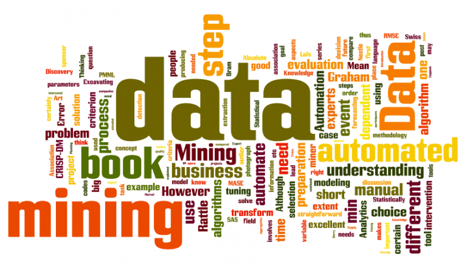

Endüstri 4.0'ı hayata geçirmek için gerekli olan teknolojik altyapıların tamamlanması ve bu alanlarda uzman kişilerin yetiştirilmesinde geç kalınması Türkiye’ye kaldırmakta zorlanacağı bir yük getirecektir. Uluslararası piyasalardaki rekabet gücünü koruyabilmek adına bu son sanayi devriminin gerekliliklerini yapmak Türkiye’nin en önemli ev ödevlerinden birisidir. Türkiye’nin Endüstri 4.0 için atması gereken adımların doğru bir şekilde belirlenebilmesi adına ülkenin içinde bulunduğu durumun tespitini yapmak oldukça önemlidir.
Endüstri 4.0 devriminin hayata geçebilmesinin en önemli ön koşullarından birisi, şirketlerin dijital dönüşümlerini tamamlamış olmasıdır. Dijital altyapısını tamamlamamış ve şirket kültürünü dijitalleşmeyle uyumlu bir şekilde çalışacak hale getirememiş kurumların Endüstri 4.0’ı yakalayabilmesi mümkün gözükmemektedir.
Endüstri 4.0’ın en önemli ayaklarından birisi olan veri analizi ve madenciliği konusuna odaklanması oldukça pozitif bir parametredir. Siber güvenlik konusu da nesnelerin interneti sayesinde artan verinin korunması açısından oldukça önemli bir alandır ve bu konuda şirketlerin yatırım yapma niyetinde olduğu görülmektedir.Özel sektörün teknoloji alanında yapacağı yatırımların yanı sıra devletin de bu konuda başarılı bir vizyonu olmalıdır. Aksi takdirde Türkiye sadece özel sektör yatırımlarıyla Endüstri 4.0 devrimini yakalaması mümkün değildir.
TÜBİTAK’ın 2016 yılında 1000 özel sektör kuruluşuyla yapmış olduğu çalışma, sanayimizin dijital olgunluk seviyesinin Endüstri 2.0 ile Endüstri 3.0 arasında olduğunu göstermektedir. Aynı çalışmanın en önemli sonuçlarından bir diğeri ise; endüstriyel robotların, otomasyon ve siber fiziksel sistemlerinin kullanımının büyük oranda üretimin sadece bir bölümünde olmasıdır. Bu teknolojilerin üretimin tamamında yer alması Endüstri 4.0’a giden yolda önemli bir adım olacaktır.
Endüstri 4.0’a geçiş elbette büyük yatırımlar, köklü değişimler ve teknolojik gelişim gerektiriyor. Endüstriyel süreçlerin ileri seviye otomasyonu ve akıllı fabrikalar kurmak için gerekli yatırımlar, beraberinde önemli bir büyüme vaadini de getiriyor. Çünkü yeni teknolojilere, endüstride yeni akımlara yatırım yapanlar aslında en temel müşteri beklentilerini karşılamak üzere yatırım yapmış oluyor. Bu yatırımların karşılığı da hem işletmeler hem de ülkeler için ekonomik ve endüstriyel büyüme anlamına geliyor.Öngörülere göre, Endüstri 4.0 ile birlikte endüstriyel satışlarda ilk etapta yıllık yüzde 2-3 oranında artış yaşanacak.
Endüstri 4.0’ın hayata geçirilmesiyle birlikte otonom robotlar bantlarda yerlerini alacak ve bu sayede verimlilik, kalite gibi alanlarda şirketler çok büyük adımlar atacaklardır. İşçilerin olmadığı bir üretim alanı, üretilen mallardaki hata oranlarının oldukça düşük seviyelere inmesi anlamına gelmektedir. Endüstri 4.0 dönüşümünü gerçekleştiren bir ülkenin üretim maliyetleri, işçi kullanarak üretim yapan bir ülkeye göre daha düşük olacaktır. Üretim maliyetlerinin düşüklüğü nedeniyle birçok üretim tesisi Batı’dan Doğu’ya kaymıştı fakat bu süreç Endüstri 4.0ile tersine işlemeye başlamaktadır.

Dördüncü Sanayi Devrimi’nin ezber bozan yenilikleri, beraberinde yeni bir teknoloji algısını ve yeni yetkinliklere duyulan ihtiyacı getiriyor. Örneğin sadece dört yıl içinde 16 yeni meslek dalının türemesi bekleniyor. Endüstri 4.0’ın belkemiği olan akıllı üretim süreçleri için bilişim teknolojileri alanında çok fazla sayıda uzmana ihtiyaç duyulacaktır. Türkiye’de şu dönem sıkça konuşulan orta gelir tuzağından kurtuluşun yolu da Endüstri 4.0 olarak görünüyor.